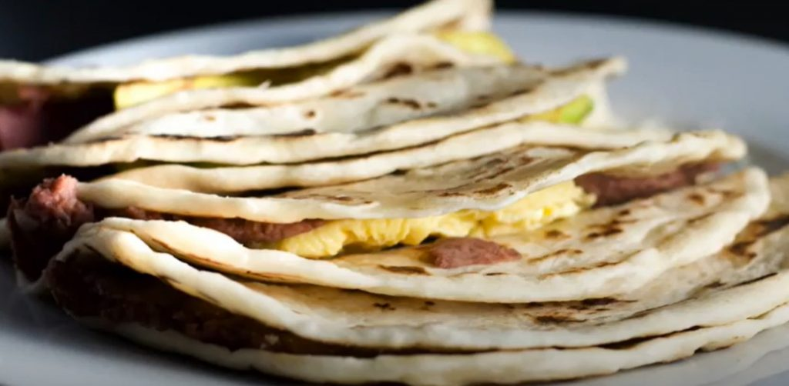

Baleadas

A simple, yet delicious, street food that come from the north coast
of honduras
In El Salvador there are pupusas. In Mexico there are tacos. In Honduras there are Baleadas.
The simple version consists of a thick flour – though sometimes corn – tortilla that has
been put on a charcoal grill. It's slathered in refried black beans and a bit of white
farmers cheese then folded over like an American-style soft taco.
Ingredients
-
Tortillas:
- 2 cups all-purpose flour
- 1 cup water
- 1/2 cup vegetable oil
- 1 egg
- 1/2 teaspoon salt
-
Filling:
- 2 cups refried beans, warmed
- 1 avocado, spliced
- 1/2 crumbled queso fresco
- 1/4 cup cream fresca
Instructions
- Mix flour, water, vegetable oil, egg, and salt in a large bowl; knead until
dough is smooth and no longer sticky.
- Form the dough into 8 golf ball-sized balls. Cover and let rest,
about 20 minutes.
- Stretch each ball of dough into a thick tortilla.
- Heat a large skillet over medium-high heat. Cook each tortilla until browned
and lightly puffed, about 1 minute per side
- Layer refried beans, avocado, and queso fresco over tortillas. Drizzle crema
on top; fold tortillas in half over filling.
Return to top
Return to main page